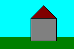
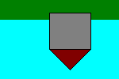

BITMAPFILEHEADER bmfh; BITMAPINFOHEADER bmih; RGBQUAD aColors[]; BYTE aBitmapBits[];bmfh contains some information about the bitmap file (about the file, not about the bitmap itself). bmih contains information about the bitmap such as size, colors,... The aColors array contains a color table. The rest is the image data, which format is specified by the bmih structure.
| start | size | name | stdvalue | purpose |
| 1 | 2 | bfType | 19778 | must always be set to 'BM' to declare that this is a .bmp-file. |
| 3 | 4 | bfSize | ?? | specifies the size of the file in bytes. |
| 7 | 2 | bfReserved1 | 0 | must always be set to zero. |
| 9 | 2 | bfReserved2 | 0 | must always be set to zero. |
| 11 | 4 | bfOffBits | 1078 | specifies the offset from the beginning of the file to the bitmap data. |
| start | size | name | stdvalue | purpose |
| 15 | 4 | biSize | 40 | specifies the size of the BITMAPINFOHEADER structure, in bytes. |
| 19 | 4 | biWidth | 100 | specifies the width of the image, in pixels. |
| 23 | 4 | biHeight | 100 | specifies the height of the image, in pixels. |
| 27 | 2 | biPlanes | 1 | specifies the number of planes of the target device, must be set to zero. |
| 29 | 2 | biBitCount | 8 | specifies the number of bits per pixel. |
| 31 | 4 | biCompression | 0 | Specifies the type of compression, usually set to zero (no compression). |
| 35 | 4 | biSizeImage | 0 | specifies the size of the image data, in bytes. If there is no compression, it is valid to set this member to zero. |
| 39 | 4 | biXPelsPerMeter | 0 | specifies the the horizontal pixels per meter on the designated targer device, usually set to zero. |
| 43 | 4 | biYPelsPerMeter | 0 | specifies the the vertical pixels per meter on the designated targer device, usually set to zero. |
| 47 | 4 | biClrUsed | 0 | specifies the number of colors used in the bitmap, if set to zero the number of colors is calculated using the biBitCount member. |
| 51 | 4 | biClrImportant | 0 | specifies the number of color that are 'important' for the bitmap, if set to zero, all colors are important. |
| start | size | name | stdvalue | purpose |
| 1 | 1 | rgbBlue | - | specifies the blue part of the color. |
| 2 | 1 | rgbGreen | - | specifies the green part of the color. |
| 3 | 1 | rgbRed | - | specifies the red part of the color. |
| 4 | 1 | rgbReserved | - | must always be set to zero. |
|  |  |
|---|---|
| pixels displayed on the screen | pixels stored in .bmp-file |
You do not need to turn around the rows manually. The API functions which also display the bitmap will do that for you
automatically.
Another important thing is that the number of bytes in one row must always be adjusted to fit into the border of a
multiple of four. You simply append zero bytes until the number of bytes in a row reaches a multiple of four, an example:
| 6 bytes that represent a row in the bitmap: | A0 37 F2 8B 31 C4 |
| must be saved as: | A0 37 F2 8B 31 C4 00 00 |
to reach the multiple of four which is the next higher after six (eight). If you keep these few rules in mind while working with .bmp files it should be easy for you, to master it.